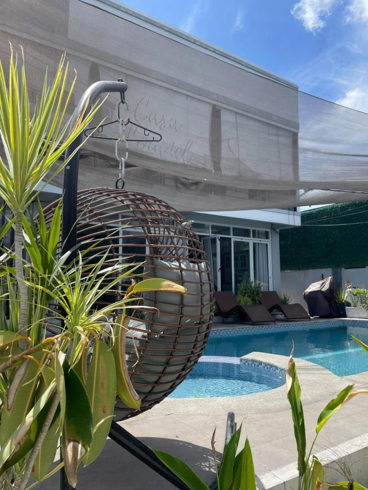
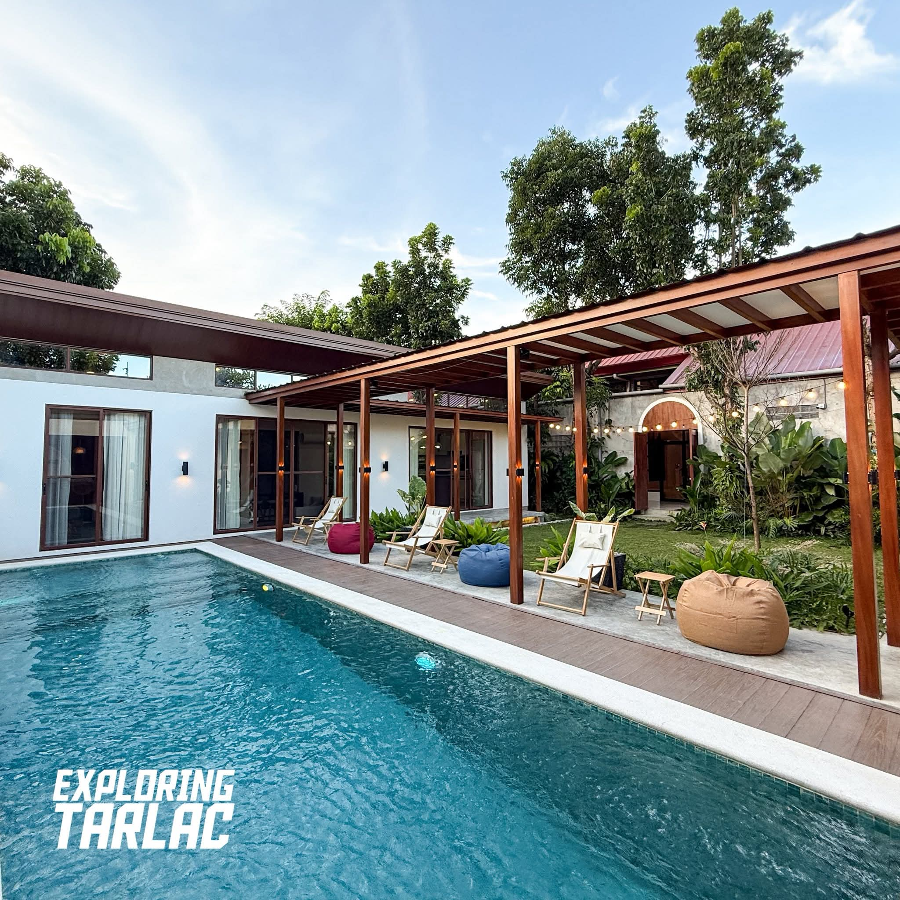
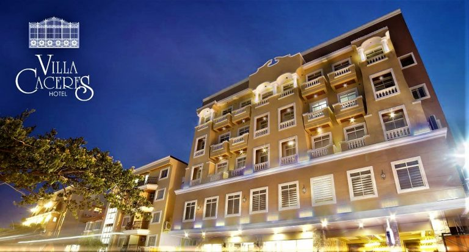
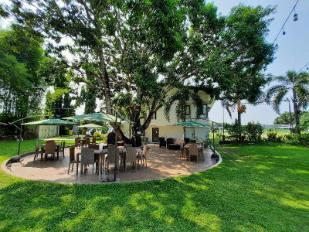

Resorts
Resorts in Tarlac are a favorite weekend escape for families, barkadas, and groups looking to unwind in a relaxed outdoor setting. Most are situated outside the city, surrounded by greenery or riverside scenery, and offer day tour and overnight packages with pools, native huts, and catering options.

Featured Resorts
-

Fontana Resort -

Villa Caceres Resort -

Capas Nature Resort
About These Resorts
- Fontana Resort: A large family resort with multiple pools, water slides, and overnight cottages set within a landscaped compound. Popular during summer for its full-day water activities and grilling areas. Weekend packages sell out fast, especially in April and May.
- Villa Caceres Resort: A quieter, more intimate resort ideal for private events and small group gatherings. Features a clean pool, covered pavilions, and overnight room accommodations. A popular venue for birthday parties, baptismal receptions, and company outings.
- Capas Nature Resort: Catering directly to adventurers heading to Mt. Pinatubo, this resort features a natural spring-fed pool and direct access to the lahar terrain. Many trekkers stay here the night before their early morning hike to avoid traveling before dawn.
Activities You Can Enjoy
- Swimming & Water Play: Every resort on this list features at least one pool. Fontana Resort leads with multiple pools including a dedicated kiddie area, making it the top pick for families with young children.
- Outdoor Dining & Grilling: Most resorts provide grilling stations and open-air pavilions where guests can bring their own food or order from on-site catering. Weekend barbecues by the pool are a staple Tarlac resort experience.
- Nature Walks & Lahar Exploration: Capas Nature Resort sits at the edge of the Pinatubo lahar zone, giving guests the unique opportunity to walk through the otherworldly post-eruption landscape just minutes from their accommodation.
What to Know Before You Book
- Day Tour vs. Overnight: Most resorts offer both. Day tour rates typically cover pool access and a cottage from morning until early evening. Overnight rates include use of a room or native hut and are significantly better value for groups staying more than one day.
- Group Packages: Resorts in Tarlac frequently offer discounted group rates for parties of 10 or more. These often include a buffet meal, unlimited pool use, and a dedicated events host.
- Corkage Fees: Some resorts allow outside food with a corkage charge. Always confirm this when booking, especially if you plan to bring your own catering for a celebration.